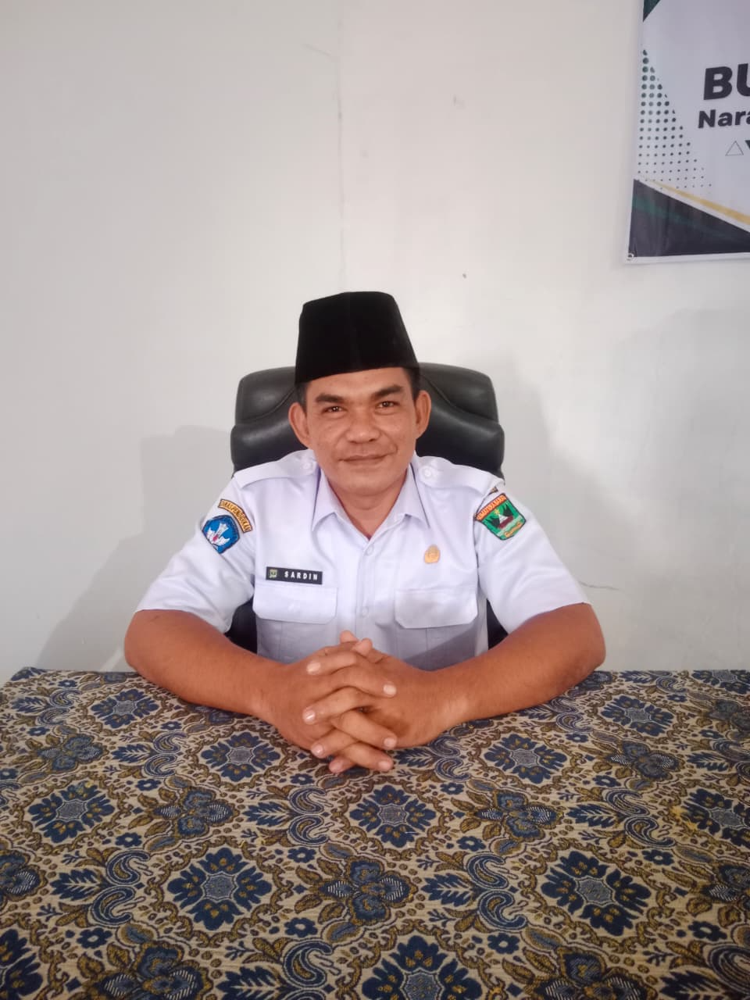

Sambutan Kepala Sekolah

Sardin, S.Pd.I.,Gr.
Kepala Sekolah SMK IT AL HIDAYAH
Assalamu'alaikum Warahmatullahi Wabarakatuh. Alhamdulillahirabbil 'alamin, puji syukur ke hadirat Allah Swt. atas rahmat dan karunia-Nya sehingga website resmi sekolah ini dapat hadir sebagai media informasi, komunikasi, dan silaturahmi bagi seluruh warga sekolah dan masyarakat.
Berlandaskan filosofi Minangkabau, "Alam takambang jadi guru," kami berkomitmen untuk menghadirkan pendidikan yang bermutu, membentuk peserta didik yang beriman, berkarakter, berprestasi, serta memiliki kompetensi yang siap menghadapi perkembangan ilmu pengetahuan, teknologi, dan dunia kerja.
"Saiyo sakato, ringan samo dijinjiang, barek samo dipikua," karena dengan kebersamaan, segala cita-cita akan lebih mudah diwujudkan. Kami percaya bahwa kemajuan sekolah hanya dapat diwujudkan melalui sinergi antara sekolah, orang tua, alumni, dunia usaha dan industri, serta masyarakat.
Terima kasih atas kepercayaan dan dukungan yang diberikan. Semoga Allah Swt. senantiasa memberikan keberkahan dan kemudahan dalam setiap langkah kita. Wassalamu'alaikum Warahmatullahi Wabarakatuh.